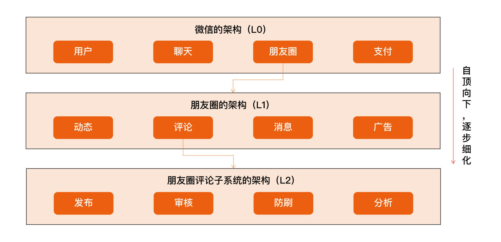

- 00 开篇词 照着做，你也能成为架构师！.md.html
- 01 架构到底是指什么？.md.html
- 02 架构设计的历史背景.md.html
- 03 架构设计的目的.md.html
- 04 复杂度来源：高性能.md.html
- 05 复杂度来源：高可用.md.html
- 06 复杂度来源：可扩展性.md.html
- 07 复杂度来源：低成本、安全、规模.md.html
- 08 架构设计三原则.md.html
- 09 架构设计原则案例.md.html
- 10 架构设计流程：识别复杂度.md.html
- 11 架构设计流程：设计备选方案.md.html
- 12 架构设计流程：评估和选择备选方案.md.html
- 13 架构设计流程：详细方案设计.md.html
- 14 高性能数据库集群：读写分离.md.html
- 15 高性能数据库集群：分库分表.md.html
- 16 高性能NoSQL.md.html
- 17 高性能缓存架构.md.html
- 18 单服务器高性能模式：PPC与TPC.md.html
- 19 单服务器高性能模式：Reactor与Proactor.md.html
- 20 高性能负载均衡：分类及架构.md.html
- 21 高性能负载均衡：算法.md.html
- 22 想成为架构师，你必须知道CAP理论.md.html
- 23 想成为架构师，你必须掌握的CAP细节.md.html
- 24 FMEA方法，排除架构可用性隐患的利器.md.html
- 25 高可用存储架构：双机架构.md.html
- 26 高可用存储架构：集群和分区.md.html
- 27 如何设计计算高可用架构？.md.html
- 28 业务高可用的保障：异地多活架构.md.html
- 29 异地多活设计4大技巧.md.html
- 30 异地多活设计4步走.md.html
- 31 如何应对接口级的故障？.md.html
- 32 可扩展架构的基本思想和模式.md.html
- 33 传统的可扩展架构模式：分层架构和SOA.md.html
- 34 深入理解微服务架构：银弹 or 焦油坑？.md.html
- 35 微服务架构最佳实践 - 方法篇.md.html
- 36 微服务架构最佳实践 - 基础设施篇.md.html
- 37 微内核架构详解.md.html
- 38 架构师应该如何判断技术演进的方向？.md.html
- 39 互联网技术演进的模式.md.html
- 40 互联网架构模板：存储层技术.md.html
- 41 互联网架构模板：开发层和服务层技术.md.html
- 42 互联网架构模板：网络层技术.md.html
- 43 互联网架构模板：用户层和业务层技术.md.html
- 44 互联网架构模板：平台技术.md.html
- 45 架构重构内功心法第一式：有的放矢.md.html
- 46 架构重构内功心法第二式：合纵连横.md.html
- 47 架构重构内功心法第三式：运筹帷幄.md.html
- 48 再谈开源项目：如何选择、使用以及二次开发？.md.html
- 49 谈谈App架构的演进.md.html
- 50 架构实战：架构设计文档模板.md.html
- 51 如何画出优秀的软件系统架构图？.md.html
- 加餐｜业务架构实战营开营了.md.html
- 加餐｜单服务器高性能模式性能对比.md.html
- 加餐｜扒一扒中台皇帝的外衣.md.html
- 如何高效地学习开源项目 华仔，放学别走！ 第3期.md.html
- 新书首发 《从零开始学架构》.md.html
- 架构专栏特别放送 华仔，放学别走！ 第2期.md.html
- 架构专栏特别放送 华仔，放学别走！第1期.md.html
- 架构师必读书单 华仔，放学别走！ 第5期.md.html
- 架构师成长之路 华仔，放学别走！ 第4期.md.html
- 结束语 坚持，成就你的技术梦想.md.html
- 捐赠
01 架构到底是指什么？
你好，我是华仔。
2018年，我发布了《从0开始学架构》这门课程，分享了我之前在电信业务和移动互联网业务方面的经验和感悟。
后来，我转岗去了蚂蚁国际，从事更加复杂的支付业务。为什么说支付业务更加复杂？因为它涉及的关联方多、业务流程长、业务模型复杂，对安全、高可用、高性能等都有更高的要求。我有幸参与了一个海外钱包从0到1的建设过程，积累了不少实战经验，于是对复杂业务的架构设计有了新的理解。
2020年，因为身体等原因，我离开了蚂蚁国际，之后就一边休养身体，一边系统地总结梳理过去的经验，先后创作了《大厂晋升指南》和《架构实战营》。在打磨课程和与各位同学交流的过程中，我对于架构学习的难点和应用的痛点，又有了新的心得体会。
因此，我决定更新这门课程的部分内容，把这些新的收获也全部分享出来，希望能帮助你与时俱进地提升架构水平。
架构到底是指什么
对于技术人员来说，“架构”是一个再常见不过的词了。我们会对新员工培训整个系统的架构，参加架构设计评审，学习业界开源系统（例如MySQL和Hadoop）的架构，研究大公司的架构实现（例如微信架构和淘宝架构）……
虽然“架构”这个词很常见，但如果深究一下，“架构”到底是指什么，大部分人就搞不清楚了。例如以下这些问题，你能够准确地回答吗？
- 微信有架构，微信的登录系统也有架构，微信的支付系统也有架构，当我们谈微信架构时，到底是在谈什么架构？
- Linux有架构，MySQL有架构，JVM也有架构，使用Java开发、MySQL存储、跑在Linux上的业务系统也有架构，应该关注哪个架构呢？
- 架构和框架是什么关系？有什么区别？
身为架构师，如果你连架构的定义都搞不清楚，那么无论是自己设计架构、给别人讲解架构，还是学习别人的架构，都会暴露问题，要么无从下手，要么张冠李戴。这无疑会成为你面试、晋升和带领团队工作时的绊脚石。
比如有些同学明明在系统架构上做了不少有价值的工作，但是在给晋升面试的评委讲解的时候，只会说“我们是微服务架构”，然后就不知道讲什么了。结果得到的评价大打折扣，晋升失败，非常可惜。
要想准确地理解架构的定义，关键就在于把三组容易混淆的概念梳理清楚：
- 系统与子系统
- 模块与组件
- 框架与架构
系统与子系统
我们先来看维基百科定义的“系统”：
系统泛指由一群有关联的个体组成，根据某种规则运作，能完成个别元件不能单独完成的工作的群体。它的意思是“总体”“整体”或“联盟”。
我来提炼一下里面的关键内容。
- 关联：系统是由一群有关联的个体组成的，没有关联的个体堆在一起不能成为一个系统。例如，把一个发动机和一台PC放在一起不能称之为一个系统，把发动机、底盘、轮胎、车架组合起来才能成为一台汽车。
- 规则：系统内的个体需要按照指定的规则运作，而不是单个个体各自为政。规则规定了系统内个体分工和协作的方式。例如，汽车发动机负责产生动力，然后通过变速器和传动轴，将动力输出到车轮上，从而驱动汽车前进。
- 能力：系统能力与个体能力有本质的差别，系统能力不是个体能力之和，而是产生了新的能力。例如，汽车能够载重前进，而发动机、变速器、传动轴、车轮本身都不具备这样的能力。
我们再来看子系统的定义：
子系统也是由一群有关联的个体所组成的系统，多半会是更大系统中的一部分。
其实，子系统的定义和系统定义是一样的，只是观察的角度有差异，一个系统可能是另外一个更大系统的子系统。
按照这个定义，系统和子系统比较容易理解，我们以微信为例来做一个分析：
- 微信本身是一个系统，包含聊天、登录、支付、朋友圈等子系统。
- 朋友圈这个系统又包括动态、评论、点赞等子系统。
- 评论这个系统可能又包括防刷子系统、审核子系统、发布子系统、存储子系统。
- 评论审核子系统不再包含业务意义上的子系统，而是包括各个模块或者组件，这些模块或者组件本身也是另外一个维度上的系统。例如，MySQL、Redis等是存储系统，但不是业务子系统。
现在，我们可以回答第一个问题了。一个系统的架构，只包括顶层这一个层级的架构，而不包括下属子系统层级的架构。所以微信架构，就是指微信系统这个层级的架构。当然，微信的子系统，比如支付系统，也有它自己的架构，同样只包括顶层。
模块与组件
模块和组件两个概念在实际工作中很容易混淆，我们经常能够听到类似这样的说法：
- MySQL模块主要负责存储数据，而Elasticsearch模块主要负责数据搜索。
- 我们有安全加密组件、有审核组件。
- App的下载模块使用了第三方的组件。
造成这种现象的主要原因是，模块与组件的定义并不好理解，也不能很好地进行区分。我们来看看这两者在维基百科上的定义：
软件模块（Module）是一套一致而互相有紧密关连的软件组织。它分别包含了程序和数据结构两部分。现代软件开发往往利用模块作为合成的单位。模块的接口表达了由该模块提供的功能和调用它时所需的元素。模块是可能分开被编写的单位。这使它们可再用和允许人员同时协作、编写及研究不同的模块。 软件组件定义为自包含的、可编程的、可重用的、与语言无关的软件单元，软件组件可以很容易被用于组装应用程序中。
可能你看完这两个定义后一头雾水，还是不知道这两者有什么区别。造成这种现象的根本原因是，模块和组件都是系统的组成部分，只是从不同的角度拆分系统而已。
从业务逻辑的角度来拆分系统后，得到的单元就是“模块”；从物理部署的角度来拆分系统后，得到的单元就是“组件”。划分模块的主要目的是职责分离；划分组件的主要目的是单元复用。
其实，“组件”的英文Component也可翻译成中文的“零件”一词。“零件”更容易理解一些，它是一个物理的概念，并且具备“独立且可替换”的特点。
我以一个最简单的网站系统来为例。假设我们要做一个学生信息管理系统，这个系统从逻辑的角度来拆分，可以分为“登录注册模块”“个人信息模块”和“个人成绩模块”；从物理的角度来拆分，可以拆分为Nginx、Web服务器和MySQL。
现在，我们可以回答第二个问题了。如果你是业务系统的架构师，首先需要思考怎么从业务逻辑的角度把系统拆分成一个个模块角色，其次需要思考怎么从物理部署的角度把系统拆分成组件角色，例如选择MySQL作为存储系统。但是对于MySQL内部的体系架构（Parser、Optimizer、Caches&Buffers和Storage Engines等），你其实是可以不用关注的，也不需要在你的业务系统架构中展现这些内容。
框架与架构
框架是和架构比较相似的概念，且两者有较强的关联关系，所以在实际工作中，这两个概念有时我们容易分不清楚。参考维基百科上框架与架构的定义，我来解释两者的区别。
软件框架（Software framework）通常指的是为了实现某个业界标准或完成特定基本任务的软件组件规范，也指为了实现某个软件组件规范时，提供规范所要求之基础功能的软件产品。
我来提炼一下其中关键部分：
- 框架是组件规范：例如，MVC就是一种最常见的开发规范，类似的还有MVP、MVVM、J2EE等框架。
- 框架提供基础功能的产品：例如，Spring MVC是MVC的开发框架，除了满足MVC的规范，Spring提供了很多基础功能来帮助我们实现功能，包括注解（@Controller等）、Spring Security、Spring JPA等很多基础功能。
软件架构指软件系统的“基础结构”，创造这些基础结构的准则，以及对这些结构的描述。
单纯从定义的角度来看，框架和架构的区别还是比较明显的：框架关注的是“规范”，架构关注的是“结构”。
框架的英文是Framework，架构的英文是Architecture，Spring MVC的英文文档标题就是“Web MVC framework”。
虽然如此，在实际工作中我们却经常碰到一些似是而非的说法，例如：
- 我们的系统是MVC架构。
- 我们需要将Android App重构为MVP架构。
- 我们的系统基于SSH框架开发。
- 我们是SSH的架构。
- XX系统是基于Spring MVC框架开发，标准的MVC架构。 ……
究竟什么说法是对的，什么说法是错的呢？
其实这些说法都是对的。造成这种现象的根本原因隐藏于架构的定义中，关键就是“基础结构”这个概念，并没有明确说是从什么角度来分解的。采用不同的角度或者维度，可以将系统划分为不同的结构，其实我在“模块与组件”中的“学生管理系统”示例已经包含了这点。
从业务逻辑的角度分解，“学生管理系统”的架构是：

从物理部署的角度分解，“学生管理系统”的架构是：

从开发规范的角度分解，“学生管理系统”可以采用标准的MVC框架来开发，因此架构又变成了MVC架构：

这些“架构”，都是“学生管理系统”正确的架构，只是从不同的角度来分解而已，这也是IBM的RUP将软件架构视图分为著名的“4+1视图”的原因。
现在，我们可以回答第三个问题了。框架是一整套开发规范，架构是某一套开发规范下的具体落地方案，包括各个模块之间的组合关系以及它们协同起来完成功能的运作规则。
重新定义架构：4R架构
参考维基百科的定义，再结合我自己的一些理解和思考，我将软件架构重新定义为：软件架构指软件系统的顶层（Rank）结构，它定义了系统由哪些角色（Role）组成，角色之间的关系（Relation）和运作规则（Rule）。

因为这个定义中的4个关键词，都可以用R开头的英文单词来表示，分别是Rank、Role、Relation和Rule，所以我把定义简称为“4R架构定义”，每个R的详细解释如下。
第一个R，Rank。它是指软件架构是分层的，对应“系统”和“子系统”的分层关系。通常情况下，我们只需要关注某一层的架构，最多展示相邻两层的架构，而不需要把每一层的架构全部糅杂在一起。无论是架构设计还是画架构图，都应该采取“自顶向下，逐步细化”的方式。以微信为例，Rank的含义如下所示：

注：L0\L1\L2指层级，一个L0往下可以分解多个L1，一个L1可以往下分解多个L2，以此类推，一般建议不超过5层（L0~L4）。
第二个R，Role。它是指软件系统包含哪些角色，每个角色都会负责系统的一部分功能。架构设计最重要的工作之一就是将系统拆分为多个角色。最常见的微服务拆分其实就是将整体复杂的业务系统按照业务领域的方式，拆分为多个微服务，每个微服务就是系统的一个角色。
第三个R，Relation。它是指软件系统的角色之间的关系，对应到架构图中其实就是连接线，角色之间的关系不能乱连，任何关系最后都需要代码来实现，包括连接方式（HTTP、TCP、UDP和串口等）、数据协议（JSON、XML和二进制等）以及具体的接口等。
第四个R，Rule。它是指软件系统角色之间如何协作来完成系统功能。我们在前面解读什么是“系统”的时候提到过：系统能力不是个体能力之和，而是产生了新的能力。那么这个新能力具体如何完成的呢？具体哪些角色参与了这个新能力呢？这就是Rule所要表达的内容。在架构设计的时候，核心的业务场景都需要设计Rule。
在实际工作中，为了方便理解，Rank、Role和Relation是通过系统架构图来展示的，而Rule是通过系统序列图（System Sequence Diagram）来展示的。
我们以一个简化的支付系统为例，支付系统架构图如下所示：

“扫码支付”这个核心场景的系统序列图如下所示：

小结
今天我为你梳理了与架构有关的几个容易混淆的概念，包括系统与子系统、模块与组件、框架与架构，并且提炼出了4R架构定义，希望对你有所帮助。
这就是今天的全部内容，留一道思考题给你吧。你原来理解的架构是如何定义的？对比我今天讲的架构定义，你觉得差异在哪里？
欢迎你把答案写到留言区，和我一起讨论。相信经过深度思考的回答，也会让你对知识的理解更加深刻。（编辑乱入：精彩的留言有机会获得丰厚福利哦！）
© 2019 - 2023 Liangliang Lee. Powered by gin and hexo-theme-book.